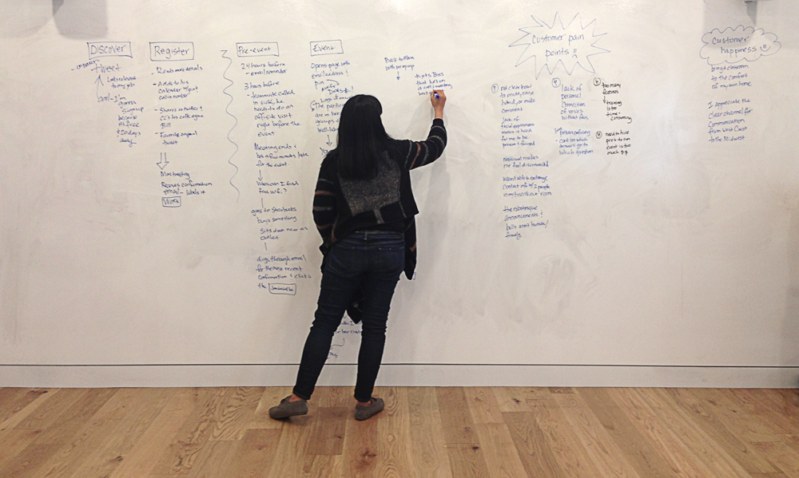

Confidential information
Below is a high level overview of my process as the design researcher on a team of eight product designers.
Busy virtual conference participants who want to join events and connect with people across the country don't have a way to attend events somewhere other than their desktop computers at home or work.
My design research played pivotal roles in this project's success. I led the research which helped the team deeply understand our users and their pain points.
I focused on aligning the team on the direction of our solution. I conducted in-depth interviews with app developers, usability tests, and charted out the existing site architecture that was preventing app developers from finding what they needed. Uncovering user needs and providing a solution that met app developers' needs contributed significantly to my team’s success.
With those user needs in mind, I brought the team together to map out our primary persona's user journey so we would have a shared empathy for the users and uncover opportunities for design solutions.
During usability testing of two clickable prototypes, we asked users to complete the following tasks:
Actions like raise hand, mute/unmute, and ask a question as the only persistent navigation will make the interface easier to navigate because it’s less clutter.
Users clicked just about every where to try and find the breakout rooms.
“Especially on a touchscreen interface, you need some way of figuring out what an icon means or the icon’s useless.” —Male, 30s
We moved important features like breakout rooms and participants to global navigation and we added labels to icons for learnability.
Side navigation would let users easily participate in a conference and multi task because they can hold the smart phone in one hand.
“I don’t like seeing all that stuff there. I want to click on [the navigation]. Do my thing. Then I don’t want to see it. I think it gets too distracting.” —Female, 40s
We moved the navigation to the top and bottom of the interface to follow convention and improve learnability. We also separated the functionality between the top and bottom navigation. The bottom would be for the actions that a participant can take during an event: mute/unmute, raise your hand, and chat. The top would be for the locations and features: breakout rooms, participant lists, user profile.
"Anna-Marie and I worked together on a UI/UX research & design project. She served as the account manager for the group of several designers working on creating a better mobile experience for participants in a virtual conference setting.
Anna-Marie did a great job of incorporating key insights from user research in the designs for the mobile experience. I highly recommend her if you need someone to figure out what customers want and design better ways of getting them what they need!"—Katharine Bierce, MaestroConference